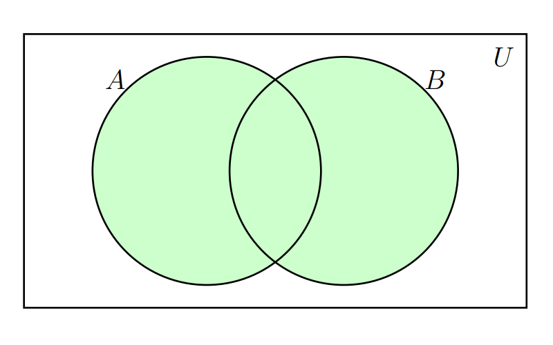
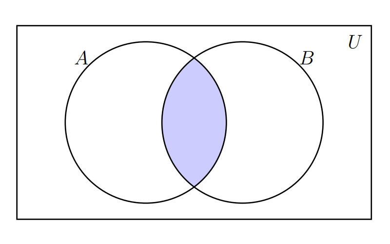
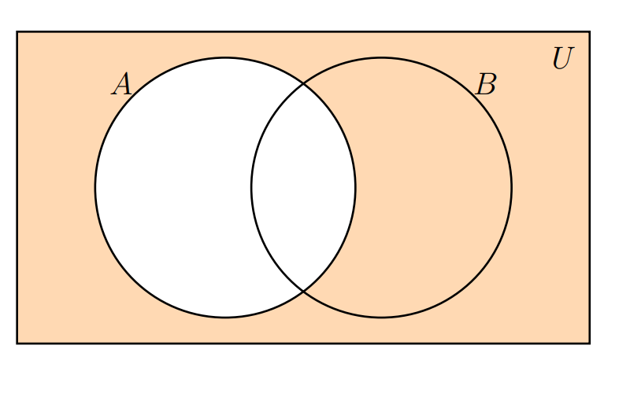
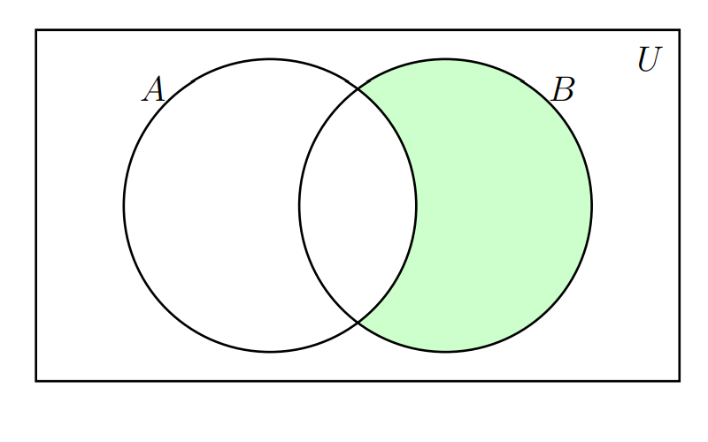

Estadística para la toma de decisiones
dgonzalez

Teoría de conjuntos
Introducción
A continuación se relacionan las principales características de los conjuntos y sus principales relaciones. Estos conceptos serán importantes al abordar los conceptos básicos de probabilidad que se expondrán en el Módulo 2.
Empezaremos con su definición.
Definición de conjunto
Un conjunto es una colección de objetos que se denota con una letra mayúscula (comúnmente las primeras letras del alfabeto A,B,C..) .
Se pueden escribir por:
por extensión : \(A=\{0,1,2,3,4,5,6,7,8,9\}\), escribiendo todos los elementos que lo conforman.
por su nombre : los dígitos
por compresión : \(A=\{ x\in\mathbb{Z}, 0\le x \le 9 \}\), utilizando nomenclatura matemática.
Al comparar o combinar conjuntos debemos hacer uso de sus propiedades y operaciones, dentro de las cuales se encuentran \(A \cup B\), \(A \cap B\),
Unión del conjunto
La unión del conjunto \(A\) con el conjunto \(B\) se denota por \(A \cup B\). La zona sombreada en la siguiente figura representa esta operación.

Ejemplo
Supongamos los siguientes conjuntos
- \(A = \{a,e,i,o,u \}\) y
- \(B = \{1,2,3,4,5,6,7,8,9,0\}\)
\[A \cup B = \{a,e,i,o,u, 1,2,3,4,5,6,7,8,9,0 \}\]
Intersección
La intersección entre el conjunto \(A\) y el \(B\) se denota por : \(A \cap B\) y se representa por la siguiente zona sombreada

Ejemplo
Supongamos los siguientes conjuntos:
- \(A = \{1,2,3,4,5,6 \}\) y
- \(B = \{2,4,6,8,10,12,14,16,18,20 \}\)
\[A \cap B = \{ 2,4,6 \}\]
Complemento
El complemento del conjunto \(A\) se escribe como: \(\overline{A}\) y se representa por la siguiente zona sombreada

Ejemplo
Supongamos los siguientes conjuntos:
- \(U = \{0,1,2,3,4,5,6,7,8,9\}\) y
- \(A = \{1,2,3,4,5,6\}\).
\[\overline{A} = \{0, 7, 8, 9 \}\]
Resta
La resta del conjunto \(B\) menos el conjunto \(A\) : \(B-A\) , está representada por la zona sombreada en la siguiente figura

Ejemplo
Supongamos los siguientes conjuntos
- \(A = \{1,2,3,4,5,6 \}\) y
- \(B = \{2,4,6,8,10,12,14,16,18,20 \}\)
\[B-A =\{ 8,10,12,14,16,18,20 \}\]
Ejercicios propuestos
- Escriba por extensión los siguientes conjuntos:
(a). \(A=\{x\in\mathbb{N}:1\leq x\leq 8\}\).
(b). \(B=\{x\in\mathbb{Z}:-3\leq x<4\}\).
(c). \(C=\{x\in\mathbb{N}:x\text{ es par y }x<15\}\).
- Sean \(A=\{1,2,3,4,5,6\}\) y \(B=\{4,5,6,7,8\}\). Calcule \(A\cup B\), \(A\cap B\), \(A-B\) y \(B-A\).
- Considere el conjunto universal \(U=\{1,2,3,4,5,6,7,8,9,10\}\) y \(A=\{2,4,6,8,10\}\). Determine \(A^c\) y compruebe que \(A\cup A^c=U\).
- Para \(D=\{a,b,c\}\), escriba todos sus subconjuntos y determine la cardinalidad del conjunto potencia \(\mathcal{P}(D)\).
- En un curso, 28 estudiantes practican fútbol, 18 practican baloncesto y 10 practican ambos deportes. ¿Cuántos practican al menos uno de los dos deportes?
- Sean \(U=\{1,2,3,4,5,6,7,8,9\}\), \(A=\{1,2,3,4,5\}\) y \(B=\{4,5,6,7\}\). Verifique las leyes de De Morgan calculando:
(a). \((A\cup B)^c\) y \(A^c\cap B^c\).
(b). \((A\cap B)^c\) y \(A^c\cup B^c\).
- Si \(A=\{1,2,3\}\) y \(B=\{x,y\}\), construya los productos cartesianos \(A\times B\) y \(B\times A\). ¿Tienen los mismos elementos?
- En una encuesta de 60 personas, 35 consumen café, 30 consumen té y 15 consumen ambas bebidas. Determine cuántas personas consumen solamente café, solamente té y ninguna de las dos bebidas.
- Determine si cada afirmación es verdadera o falsa y justifique su respuesta:
(a). \(A\cap B\subseteq A\).
(b). \(A\subseteq A\cup B\).
(c). \(A-B=B-A\) para cualesquiera conjuntos \(A\) y \(B\).
(d). \(A\cap\varnothing=A\).
- Sean \(A=\{2,4,6,8,10,12\}\), \(B=\{3,6,9,12\}\) y \(C=\{1,2,3,4,5,6\}\). Calcule y represente mediante un diagrama de Venn:
(a). \((A\cup B)\cap C\).
(b). \(A\cap(B\cup C)\).
(c). \((A-B)\cup(B-C)\).
Código R
# Ejercicio 1: construye los conjuntos definidos por comprensión.
A <- 1:8 # Números naturales entre 1 y 8.
B <- -3:3 # Números enteros desde -3 hasta 3.
C <- seq(2, 14, by = 2) # Números pares positivos menores que 15.
# Ejercicio 2: define A y B para efectuar las operaciones básicas.
A <- c(1, 2, 3, 4, 5, 6)
B <- c(4, 5, 6, 7, 8)
union(A, B) # Elementos que pertenecen a A o a B.
intersect(A, B) # Elementos comunes a ambos conjuntos.
setdiff(A, B) # Elementos de A que no pertenecen a B.
setdiff(B, A) # Elementos de B que no pertenecen a A.
# Ejercicio 3: calcula el complemento de A respecto del universo U.
U <- 1:10
A <- c(2, 4, 6, 8, 10)
Ac <- setdiff(U, A)
Ac
setequal(union(A, Ac), U) # Verifica que A unido con su complemento sea U.
# Ejercicio 4: genera el conjunto potencia de un vector x.
conjunto_potencia <- function(x) {
# Para cada tamaño k, combn() obtiene todos los subconjuntos posibles.
unlist(
lapply(
0:length(x),
function(k) combn(x, k, simplify = FALSE)
),
recursive = FALSE # Conserva cada subconjunto como un vector separado.
)
}
D <- c("a", "b", "c")
P_D <- conjunto_potencia(D)
P_D # Muestra todos los subconjuntos de D.
length(P_D) # Comprueba que hay 2^3 = 8 subconjuntos.
# Ejercicio 5: aplica el principio de inclusión-exclusión.
futbol <- 28
baloncesto <- 18
ambos <- 10
al_menos_uno <- futbol + baloncesto - ambos
# Ejercicio 6: define el universo y los conjuntos para verificar De Morgan.
U <- 1:9
A <- 1:5
B <- 4:7
# Comprueba que el complemento de la unión sea la intersección de complementos.
setequal(
setdiff(U, union(A, B)),
intersect(setdiff(U, A), setdiff(U, B))
)
# Comprueba que el complemento de la intersección sea la unión de complementos.
setequal(
setdiff(U, intersect(A, B)),
union(setdiff(U, A), setdiff(U, B))
)
# Ejercicio 7: construye los productos cartesianos en ambos órdenes.
A <- c(1, 2, 3)
B <- c("x", "y")
AxB <- expand.grid(A = A, B = B)
BxA <- expand.grid(B = B, A = A)
# Ejercicio 8: separa los resultados de la encuesta por regiones del diagrama.
total <- 60
cafe <- 35
te <- 30
ambas <- 15
solo_cafe <- cafe - ambas
solo_te <- te - ambas
ninguna <- total - (cafe + te - ambas)
# Ejercicio 9: una función auxiliar comprueba si A es subconjunto de B.
es_subconjunto <- function(A, B) all(A %in% B)
es_subconjunto(intersect(A, B), A) # A intersección B está contenido en A.
es_subconjunto(A, union(A, B)) # A está contenido en A unión B.
setequal(setdiff(A, B), setdiff(B, A)) # Evalúa si A-B y B-A son iguales.
setequal(intersect(A, numeric(0)), A) # Evalúa si A intersección vacío es A.
# Ejercicio 10: redefine A, B y C y resuelve las operaciones combinadas.
A <- c(2, 4, 6, 8, 10, 12)
B <- c(3, 6, 9, 12)
C <- 1:6
intersect(union(A, B), C) # (A unión B) intersección C.
intersect(A, union(B, C)) # A intersección (B unión C).
union(setdiff(A, B), setdiff(B, C)) # (A-B) unión (B-C).